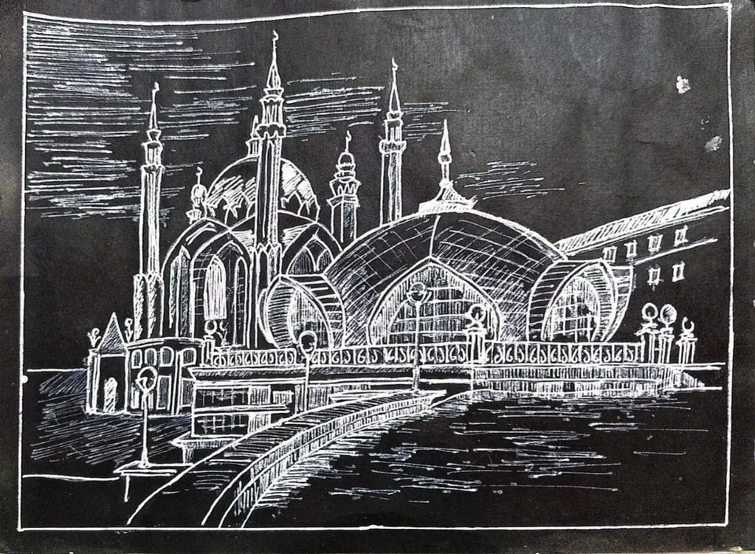
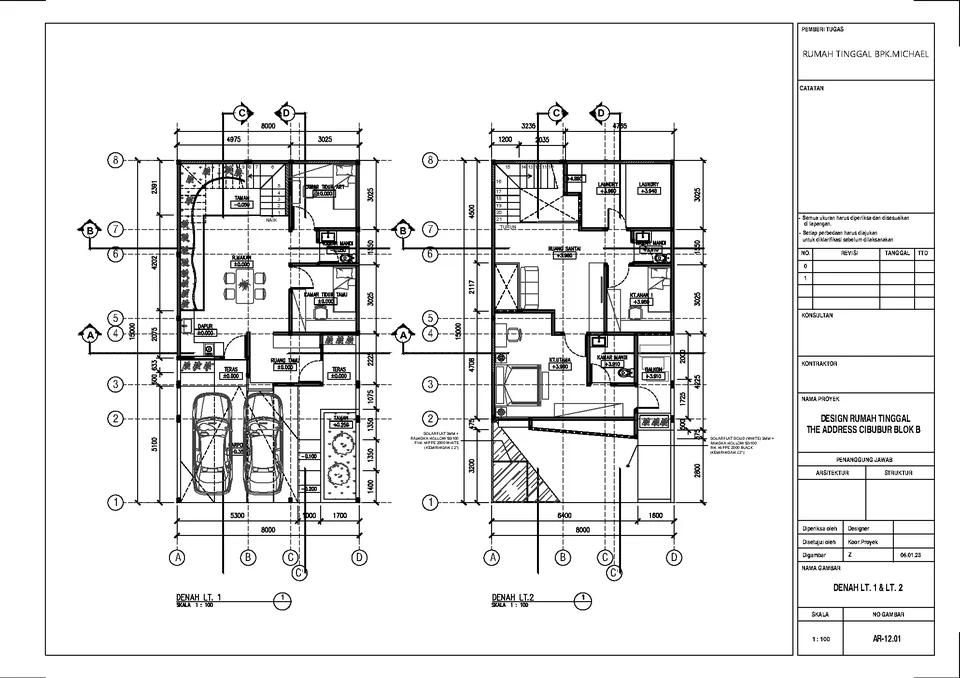
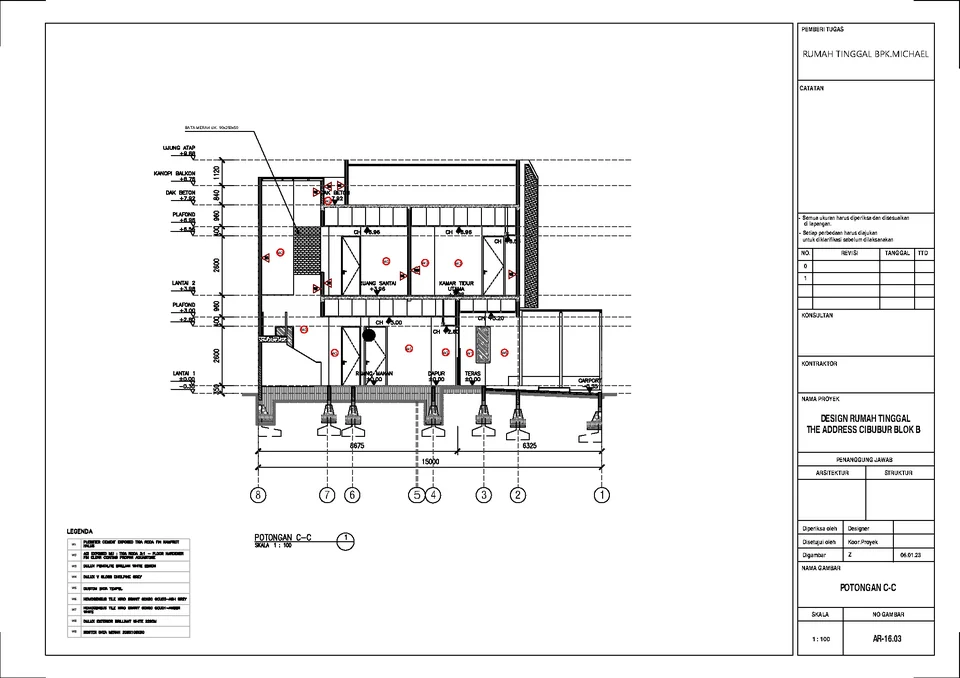
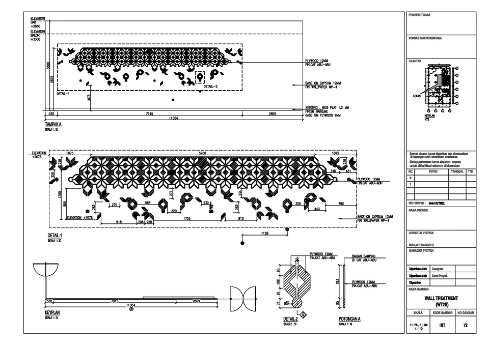
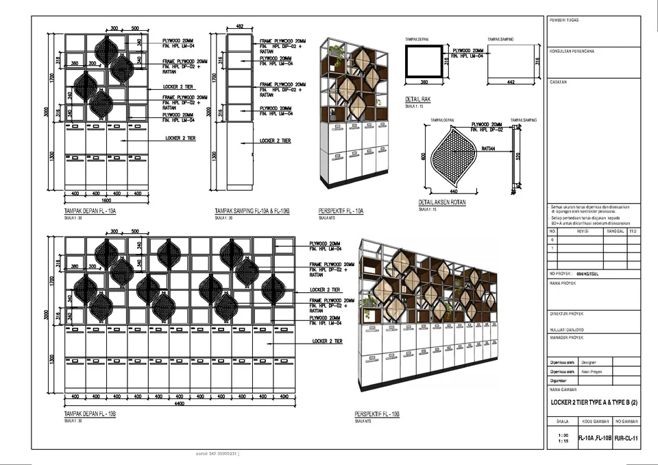
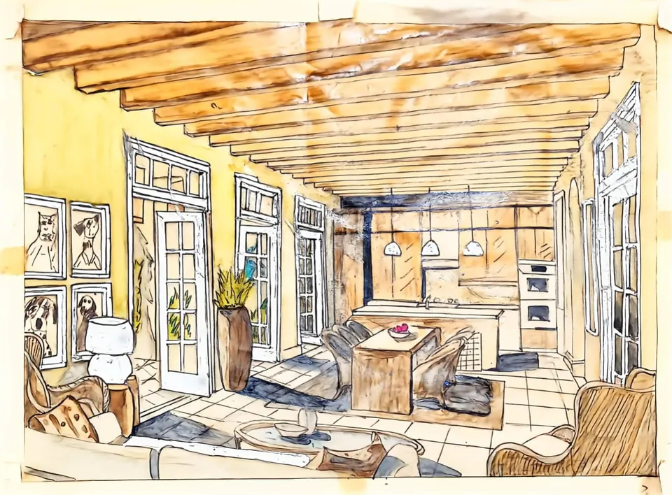

![]([{"src":"../assets/img/paragon/gerbang-organik-1600.webp","srcset":"../assets/img/paragon/gerbang-organik-480.webp 480w, ../assets/img/paragon/gerbang-organik-960.webp 960w, ../assets/img/paragon/gerbang-organik-1600.webp 1600w, ../assets/img/paragon/gerbang-organik-2400.webp 2400w","label":"Paragon. Gerbang organik menuju area pajang","href":"../karya/paragon/"},{"src":"../assets/img/taman-medyra/gerbang-1600.webp","srcset":"../assets/img/taman-medyra/gerbang-480.webp 480w, ../assets/img/taman-medyra/gerbang-960.webp 960w, ../assets/img/taman-medyra/gerbang-1600.webp 1600w, ../assets/img/taman-medyra/gerbang-2400.webp 2400w","label":"Taman Medyra. Satu-satunya gerbang ada di sisi timur. Render tahap awal","href":"../karya/taman-medyra/"},{"src":"../assets/img/paragon/area-pandang-1600.webp","srcset":"../assets/img/paragon/area-pandang-480.webp 480w, ../assets/img/paragon/area-pandang-960.webp 960w, ../assets/img/paragon/area-pandang-1600.webp 1600w, ../assets/img/paragon/area-pandang-2400.webp 2400w","label":"Paragon. Area pandang, koridor yang menghadap lantai produksi","href":"../karya/paragon/"},{"src":"../assets/img/hong-hua-interior/selasar-1600.webp","srcset":"../assets/img/hong-hua-interior/selasar-480.webp 480w, ../assets/img/hong-hua-interior/selasar-960.webp 960w, ../assets/img/hong-hua-interior/selasar-1600.webp 1600w, ../assets/img/hong-hua-interior/selasar-1921.webp 1921w","label":"Hong Hua Mandarin: Interior. Selasar lantai 2","href":"../karya/hong-hua-interior/"}])
Lainnya


Cara tercepat saya membaca suasana ruang.
Gambar kerja
Gambar kerja yang siap dibangun, dan sketsa tangan untuk membaca ruang.
Denah lantai 1 & 2
- Lembar
- 01 / 04
- Skala
- 1 : 100
- Proyek
- The Address Cibubur
- Dibuat
- AutoCAD
Dua denah dalam satu lembar, hubungan lantai bawah dan atas langsung terbaca.


Potongan C-C
- Lembar
- 02 / 04
- Skala
- 1 : 100
- Proyek
- The Address Cibubur
- Dibuat
- AutoCAD
Potongan dari pondasi sampai atap, lengkap dengan legenda material.


Detail dinding WT2B
- Lembar
- 03 / 04
- Skala
- 1 : 75 sampai 1 : 10
- Gambar
- Wall treatment WT2B
- Dibuat
- AutoCAD
Pola geometris dari plywood di atas dinding gypsum berlapis wallpaper.


Detail loker FL-10
- Lembar
- 04 / 04
- Skala
- 1 : 30 dan 1 : 15
- Gambar
- Loker FL-10A & FL-10B
- Dibuat
- AutoCAD
Loker dua tingkat dengan aksen panel rotan berbentuk daun.


Sketsa tangan
Cara tercepat saya membaca suasana ruang.

